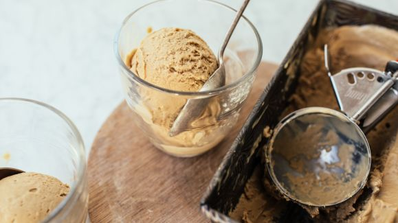

Coffee ice cream

A coffe lover's dream. Rich, creamy, and sweet balanced perfectly with the bitter of coffee
Got this recipe from a friend and modified scaled down to a pint (which is 1 cup of liquid without churning).
Substituted vanilla bean paste for extract to deepen the vanilla flavor and give it some personality.
Ingredients:
- 2/3 cup heavy whipping cream
- 1/3 cup whole milk
- 1/3 teaspoon vanilla bean paste
- 1/4 cup sugar
- 1 tablespoon of espresso extract
Instructions
- If your ice cream maker requires it, prechill the bowl for 24 hours
- Dissolve 1/4 cup of sugar in 1/4 cup milk. Whisk or mix until smooth
- Add espresso powder and vanilla bean paste and mix until incorporated
- Pour 2/3 cup heavy whipping cream until the mixture and gently mix until homogenous
- Chill mixture for 1-3 hours. Preferrably closer to 3 hours and place into freezer
- Pour mixture into ice cream maker and churn ice cream until ready
- Transfer into another container and freeze until ready to eat